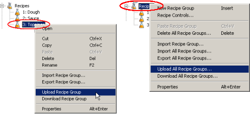
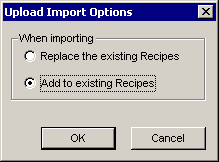
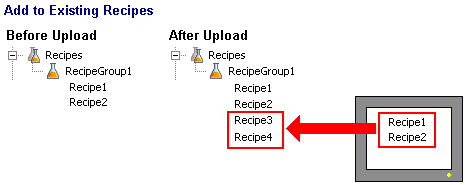
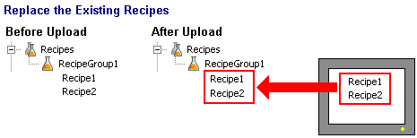

|
|
|
|
|
|
|
|
You can upload recipe group data from Runtime to the Editor. You would typically perform an upload if you modify recipes in Runtime on the target machine or on the equipment.
When uploading recipes from the Runtime, you have the option of overwriting existing recipes or appending recipes to the list of existing recipes. For example, if the yeast ingredient in the Dough recipe group undergoes a change in Runtime, when you upload you can change the existing recipe so it contains the new yeast value, or you can upload as a new recipe in the recipe group.
Right-click the recipe group.
If you want to upload a specific recipe group, in the Navigator window, right-click the recipe group and select Upload Recipe Group, or to upload all the recipe groups, right-click the Recipes node and select Upload All Recipe Groups.

The Upload Import Options dialog box appears.

Select Add to existing Recipes to append recipes from the target machine to recipes on the editor.

Select Replace the existing Recipes to add the recipes from the target machine to recipes on the editor and overwrite any recipes with matching Recipe IDs.


You can only upload recipes into the project where the recipe was originally created. You cannot upload recipes into a different project.
After uploading recipe groups, the names of individual recipes in recipe groups revert to their default names. For example, if you upload Dough which contains three recipes– Thin Crust, Thick Crust, and Pan Crust –the recipe names after upload display in the recipe editor as: Recipe1, Recipe2, and Recipe3. However, the language labels for recipes are imported correctly. For example if the languages are English and French the recipe labels for each language would display Dough and Pâte, respectively.